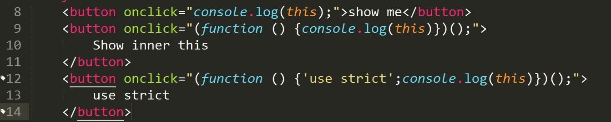

前言
this 指向问题是入坑前端必须了解知识点，现在迎来了ES6时代，因为箭头函数的出现，所以感觉有必要对 this 问题梳理一下，遂有此文
在非箭头函数下， this 指向调用其所在函数的对象，而且是离谁近就是指向谁（此对于常规对象，原型链， getter & setter等都适用）；构造函数下，this与被创建的新对象绑定；DOM事件，this指向触发事件的元素；内联事件分两种情况，bind绑定， call & apply 方法等， 容以下一步一步讨论。箭头函数也会穿插其中进行讨论。
全局环境下
在全局环境下，this 始终指向全局对象（window）, 无论是否严格模式；
|
|
函数上下文调用
函数直接调用
普通函数内部的this分两种情况，严格模式和非严格模式。
严格模式下，this 的值默认为全局对象window
|
|
非严格模式， this的值为undefined
|
|
对象中的this
对象内部方法的this指向调用这些方法的对象，
- 函数的定义位置不影响其this指向，this指向只和调用函数的对象有关。
- 多层嵌套的对象，内部方法的this指向离被调用函数最近的对象（window也是对象，其内部对象调用方法的this指向内部对象， 而非window）。
|
|
原型链中this
原型链中的方法的this仍然指向调用它的对象，与以上讨论一致；看个例子，
可以看出， 在p中没有属性f，当执行p.f()时，会查找p的原型链，找到 f 函数并执行，但这与函数内部this指向对象 p 没有任何关系，只需记住谁调用指向谁。
以上对于函数作为getter & setter 调用时同样适用。
构造函数中this
构造函数中的this与被创建的新对象绑定。
注意：当构造器返回的默认值是一个this引用的对象时，可以手动设置返回其他的对象，如果返回值不是一个对象，返回this。
|
|
以上两个例子内部的this都指向对象o, 看到这里的你不妨在控制台执行下以上代码，看看对象 o 和 b ，这些是属于构造函数的内容了，此处不多做介绍。（C2函数中的this.a = 37 对整个过程完全没有影响的， 可以被忽略的）。
call & apply
当函数通过Function对象的原型中继承的方法 call() 和 apply() 方法调用时， 其函数内部的this值可绑定到 call() & apply() 方法指定的第一个对象上， 如果第一个参数不是对象，JavaScript内部会尝试将其转换成对象然后指向它。
例子：
|
|

bind 方法
bind方法在ES5引入， 在Function的原型链上， Function.prototype.bind。通过bind方法绑定后， 函数将被永远绑定在其第一个参数对象上， 而无论其在什么情况下被调用。
|
|
DOM 事件处理函数中的 this & 内联事件中的 this
DOM事件处理函数
- 当函数被当做监听事件处理函数时， 其 this 指向触发该事件的元素 （针对于addEventListener事件）
|
|
以上代码建议在网页中执行以下，看下效果。
内联事件
内联事件中的this指向分两种情况：
- 当代码被内联处理函数调用时，它的this指向监听器所在的DOM元素
- 当代码被包括在函数内部执行时，其this指向等同于 函数直接调用的情况，即在非严格模式指向全局对象window， 在严格模式指向undefined

页面的代码块

在浏览器内显示三个按钮
依次点击上边的三个按钮后在控制台的输出结果，
建议自己操作一遍以便于更好的理解。
setTimeout & setInterval
对于延时函数内部的回调函数的this指向全局对象window（当然我们可以通过bind方法改变其内部函数的this指向）
看下边代码及截图
|
|

箭头函数中的 this
由于箭头函数不绑定this， 它会捕获其所在（即定义的位置）上下文的this值， 作为自己的this值，
- 所以 call() / apply() / bind() 方法对于箭头函数来说只是传入参数，对它的 this 毫无影响。
- 考虑到 this 是词法层面上的，严格模式中与 this 相关的规则都将被忽略。（可以忽略是否在严格模式下的影响）
因为箭头函数可以捕获其所在上下文的this值 所以
|
|
以上代码可以得到我们所以希望的值，下图可以看到，在setTimeout中的this指向了构造函数新生成的对象，而普通函数指向了全局window对象

|
|
bind() & apply() 读者可以自行测试
对于是否严格模式示例代码（可以复制进控制台进行验证）
|
|

以上的箭头函数都是在方法内部，总之都是以非方法的方式使用，如果将箭头函数当做一个方法使用会怎样呢？
上例子
|
|

可以看到，作为方法的箭头函数this指向全局window对象，而普通函数则指向调用它的对象
以上为个人学习整理内容， 文中例子参考MDN， 欢迎交流学习
参考文献
this - JavaScript | MDN
箭头函数 - JavaScript | MDN
欢迎留言交流，如需转载请注明出处